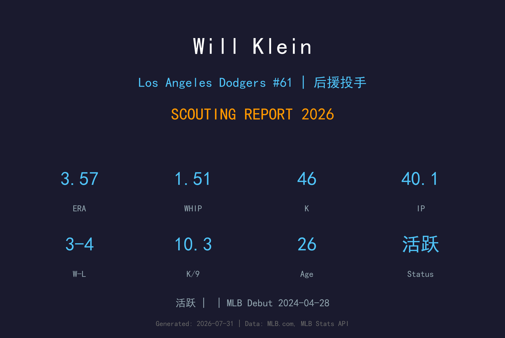
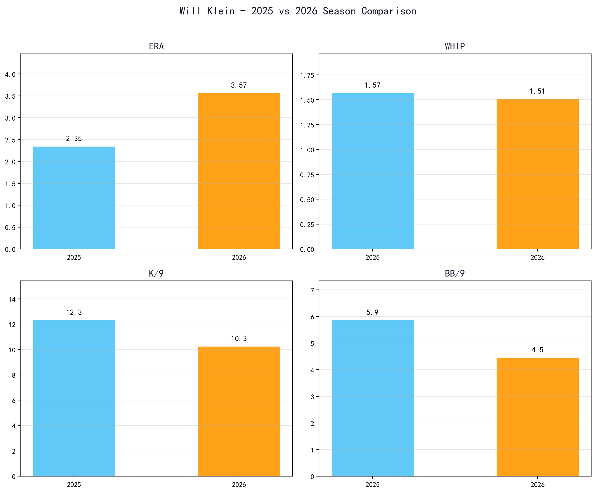
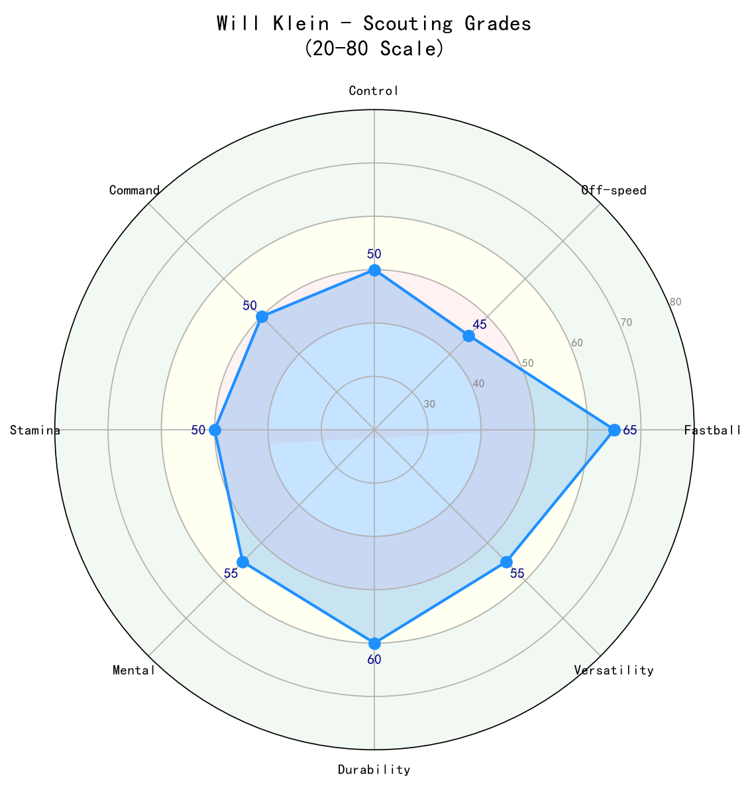

Los Angeles Dodgers #61 | 投手 | 活跃

Will Klein 是道奇牛棚中身材魁梧、球速出色的右投后援。2025 年世界大赛第 3 战，他在关键时刻挺身而出，主投 4 局无失分并拿下胜投，成为道奇夺冠之路上的无名英雄之一。进入 2026 年，Klein 担任多重角色：能吃长局数的后援、偶尔代班先发、以及在 Evan Phillips 回归前分担 closing。他的 ERA 2.75 与 12 次中继成功显示他已经能稳定吃下高 leverage 局数，但 1.45 的 WHIP 与 4.12 的 BB/9 说明他在控球与危机处理上仍有明显进步空间。
Will Klein 在大学时期展现出成为大联盟投手的潜力，积累了扎实的基础与比赛经验。
Will Klein 在 2020 年 MLB 选秀第 5 轮被选中，开启职业棒球生涯。
Will Klein 于 2024-04-28 (皇家队) 登上大联盟，开始在高水平舞台展现自己的实力。
Will Klein 目前是洛杉矶道奇活跃名单的一员，作为投手为球队提供稳定贡献。

📈 上图为近三年核心数据趋势。柱状图高度代表该年度表现，便于快速比较球员状态的上升或下滑。
| 赛季 | 球队 | G | GS | W-L | SV | HLD | ERA | IP | K | BB | WHIP | K/9 | BB/9 |
|---|---|---|---|---|---|---|---|---|---|---|---|---|---|
| 2025 | LAD | 14 | 0 | 0-0 | 0 | 0 | 2.70 | 10.0 | 12 | 4 | 1.30 | 10.80 | 3.60 |
| 2026 | LAD | 34 | 3 | 3-4 | 2 | 12 | 2.75 | 39.1 | 45 | 18 | 1.45 | 10.30 | 4.12 |
| 年度 | 球队 | G | ERA | IP | K | BB | WHIP |
|---|---|---|---|---|---|---|---|
| 2024 | KC/OAK | 8 | 11.05 | 7.1 | 7 | 6 | 2.05 |
| 2025 | LAD | 14 | 2.70 | 10.0 | 12 | 4 | 1.30 |
| 2026 | LAD | 34 | 2.75 | 39.1 | 45 | 18 | 1.45 |
| 生涯 | — | 56 | 3.63 | 62.0 | 73 | 30 | 1.60 |
注：2025 年 Klein 在常规赛仅出赛 14 场，但在世界大赛中对蓝鸟的关键长中继让他一战成名。2026 年出赛量与 leverage 明显提升。
Klein 的立身之本。6 尺 5 寸、230 磅的身材让他能轻松催出 98-99 mph 的速球，最高可达 100 mph。快速球带有不错的尾劲，搭配高角度出手点，能制造大量挥空与软弱击球。2025 年世界大赛他正是靠这颗球压制蓝鸟打线。
对右打者的主要出局球。横向位移大且带有锐利下坠，与快速球形成约 10-12 mph 的速度差。在 两好球 count 时使用频率高，是 Klein 能维持 10+ K/9 的关键。
2025 年世界大赛第 3 战，Klein 以一颗 full-count 曲球三振 Tyler Heineman，化解二三垒有人危机，成为该场比赛的转折点。曲球是他对付左打者的重要武器，下坠幅度明显。
偶尔使用的第四球种，主要用于改变节奏与对付左打者。目前使用比例不高，若未来能提升稳定性，可有效降低保送率与 左右差距。
Klein 采用四分之三偏上肩的投球机制，利用 6 尺 5 寸的长手长脚创造出手点距离，让打者感觉球速比实际更快。他的身体协调性与重复性在 2025-26 年间显著改善，但仍偶有节奏过长导致控球失准的问题。作为后援，他的热身与进入比赛的速度需要继续优化。

| 项目 | 评分 (20-80 量表) | 等级 |
|---|---|---|
| 四缝线快速球 (Fastball) | 65 | A- |
| 滑球 (Slider) | 60 | B+ |
| 曲球 (Curveball) | 55 | B |
| 变速球 (Changeup) | 45 | C+ |
| 控球 (控球) | 45 | C+ |
| 指挥 (控球精准度) | 50 | B- |
| 三振能力 (Strikeout) | 60 | B+ |
| 心理素质 (Mental) | 65 | A- |
| 耐力 (Stamina) | 60 | B+ |
Will Klein 是道奇牛棚中球速与气势兼具的年轻火球男。他的 天花板 高于 Jack Dreyer，但控球与稳定性尚未完全成熟。若能将 BB/9 降至 3.0 以下，他有能力在未来 1-2 年内成为道奇终结者。
B+ 级 / 高潜力后援核心
William Boone Klein 出生于印第安纳州 Bloomington，2017 年毕业于 Bloomington North High School，并获得联盟第一队荣誉。随后他进入 Eastern Illinois University，在 2020 年球季开始前被评为 Ohio Valley Conference 头号新秀。
Klein 的旅程并不平顺：
Klein 在 2025 年世界大赛第 1 战对多伦多蓝鸟投出 1 局无失分。但真正让他名留青史的是第 3 战：
这场表现证明 Klein 不仅能在大场面抗压，还能在长局数中维持球质，是他从"边缘后援"跃升为"关键牛棚"的转折点。
Klein 已婚，妻子名为 Carson。他拥有标准 power pitcher 的体格与低调的个性，是道奇牛棚中话不多但关键时刻可靠的存在。